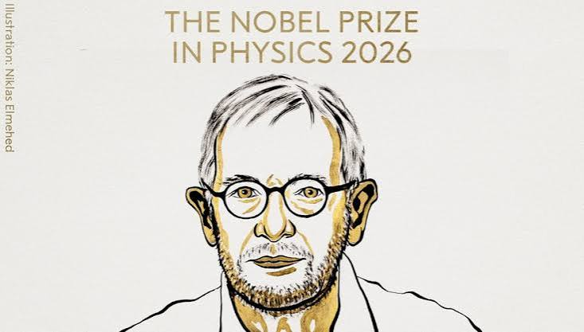

5° Notícia
Nobel de Física de 2026 consagra a astronomia de neutrinos de alta energia
O Prêmio Nobel de Física de 2026 foi concedido ao cientista Francis Halzen pelo desenvolvimento do observatório IceCube e pela inauguração da astronomia de neutrinos astrofísicos.
- O avanço: Utilizando sensores enterrados no gelo profundo da Antártida, a equipe detectou neutrinos — partículas subatômicas sem carga elétrica que atravessam galáxias sem sofrer desvio por campos magnéticos.
- Por que é incrível: Permite rastrear com precisão a origem dos eventos mais energéticos do Universo, funcionando como uma nova janela de observação cósmica complementar às ondas gravitacionais e à luz.
